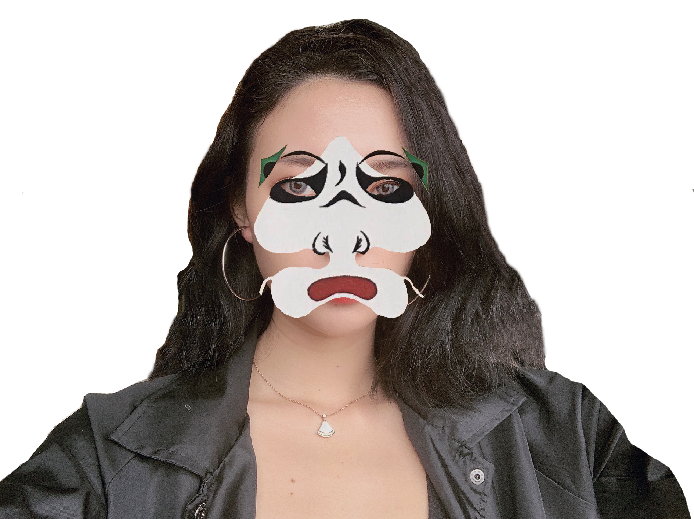
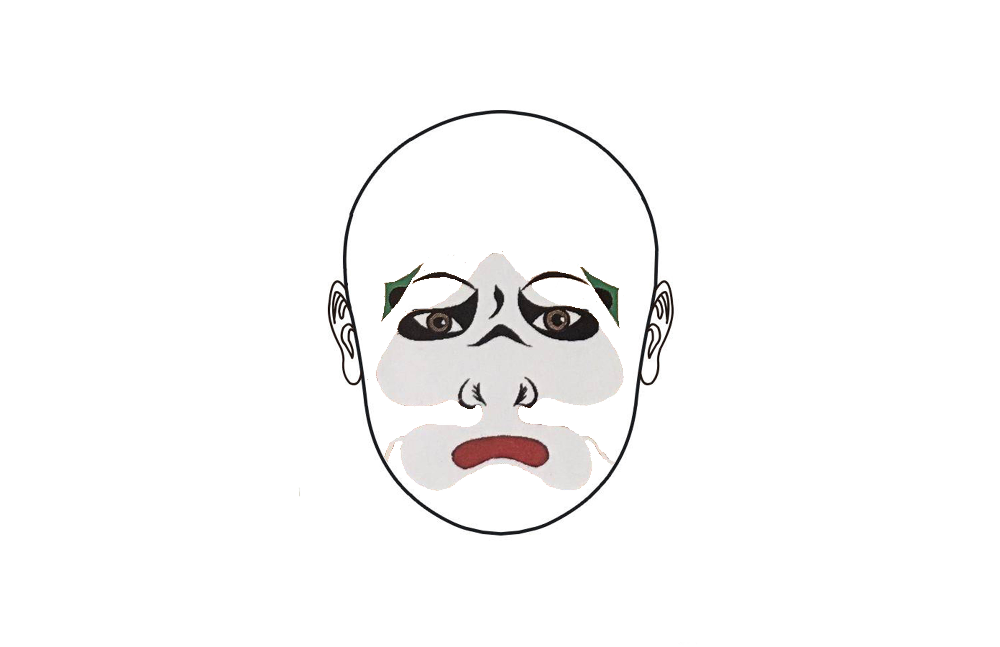
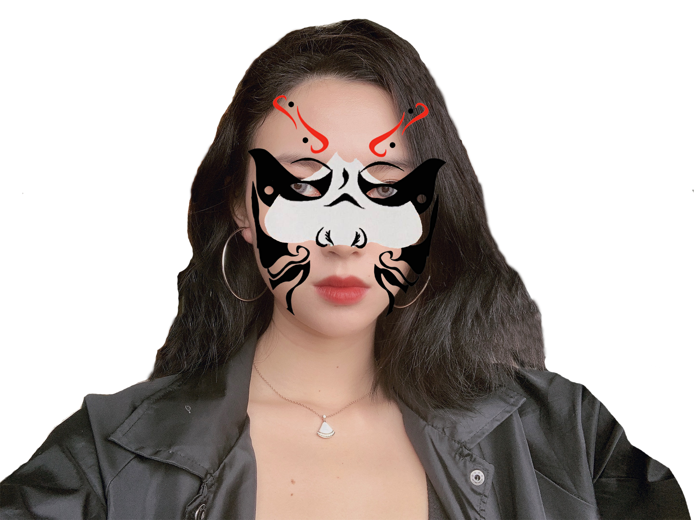
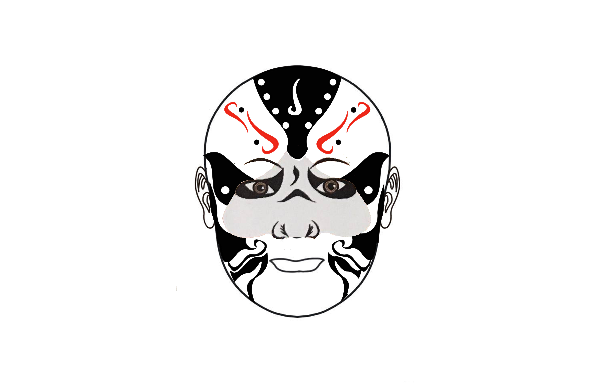
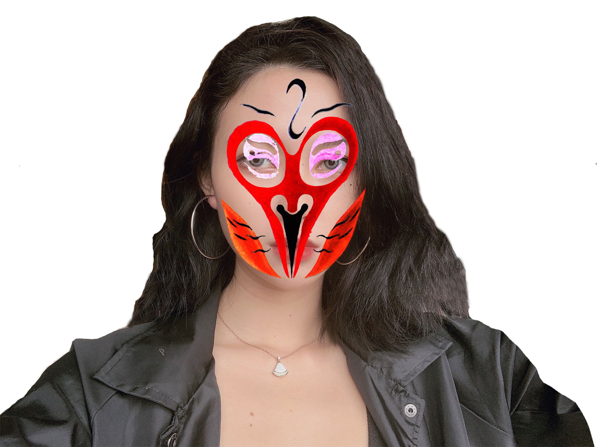
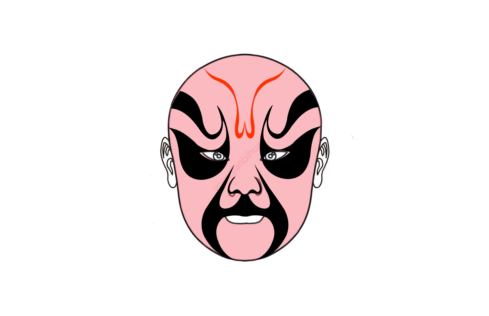
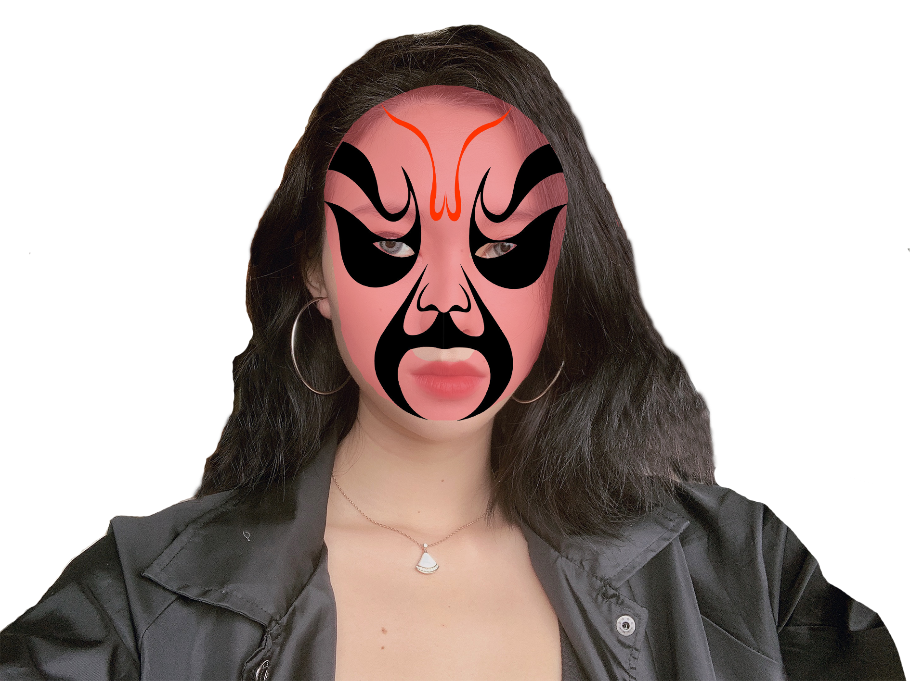
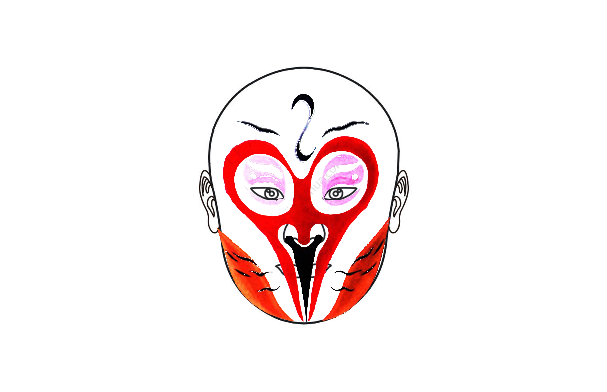

AESTHETIC CHANGES
Year : 2019
media : Interface
It can be concluded from statistics that when pursing beauty, people a mono point of view on beauty. People's dress and appearance will change with the beauty standards, which often depend on the political state and economic conditions. The fact that many industries related to beauty have been developed proves that people have a very passive aesthetic. Aesthetics varies with the times, and it also has obvious characteristics in various products of Chinese culture, for example the facial makeup of Pekin Opera.







